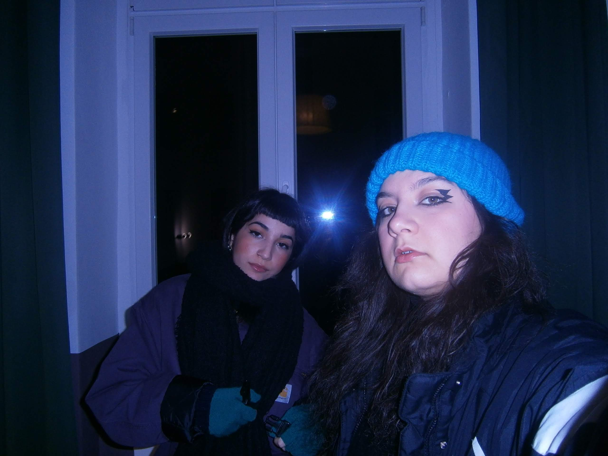

Questo è un locale che consiglio fortemente.
Dopo ore ed ore di ricerca incrociando dati e ricerche di Google Maps e Tripadvisor, io e la mia socia, che assolutamente non potevamo programmare cosa fare prima di partire, troviamo questo posto: le foto sono poche ma tutti, nelle recensioni, ne parlano con entusiasmo. Decidiamo di andare.
Unico problema e dovuta premessa: la cultura dei buttafuori berlinese. Qualsiasi posto ha un processo di selezione eccessivamente accurato, una sorta di intervista, che, se non superi, ti impedisce l’accesso al posto. Io ero assolutamente convinta che noi, con la faccia meno da raver del mondo non avremmo mai convinto nessuno, e invece, dopo venti minuti di pullman, un’attesa sotto la pioggia e una chiacchierata fintamente rilassata con la signora davanti alla porta, siamo entrate.
Dopo aver pagato, prima ci perquisiscono con grande perizia e poi ci coprono entrambe le fotocamere del cellulare intimandomi che “what happens here stays here.”
Finalmente siamo dentro e il posto è diverso da qualsiasi cosa avessi mai visto prima. È una casa su più piani, con più stanze e ogni zona ha un dj-set diverso. L’atmosfera è molto bella e riusciamo anche a conoscere gente simpatica, tanto che il tempo perde ogni contorno e usciamo di lì alle 6 del mattino.
Se passate da Berlino e di fare la fila al Berghain non ne avete mezza il Renate è un ottima alternativa.
Hei tu! Grazie di avermi dedicato il tuo tempo e aver letto fino alla fine! Se ti andasse mi farebbe piacere sapere cosa ne pensi, puoi scrivermi su Instagram @posticarinii o via mail posticarinii@gmail.com . Buona giornata :)